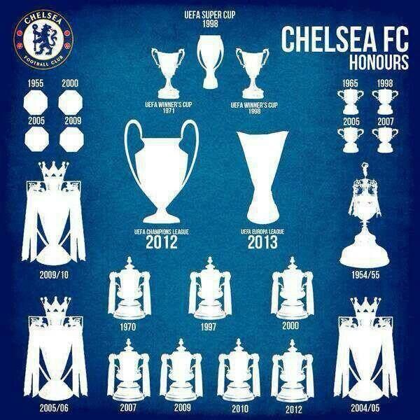

Chelsea Football Club are an English professional football club based in Fulham, London. Founded in 1905,
they compete in the Premier League, the top division of English football. Chelsea are among England's most
successful clubs, having won over thirty competitive honours, including six league titles and six European
trophies. Their home ground is Stamford Bridge.
Chelsea's home kit colours are royal blue shirts and shorts with white socks. The club's crest features a
ceremonial lion rampant regardant holding a staff. The club have rivalries with neighbouring teams Arsenal
and Tottenham Hotspur, and a historic rivalry with Leeds United. Based on attendance figures, the club have
the sixth-largest fanbase in England. In terms of club value, Chelsea are the sixth most valuable football
club in the world, worth £2.13 billion ($2.576 billion), and are the eighth highest-earning football club
in the world, with earnings of over €428 million in the 2017–18 season. Since 2003, Chelsea have been owned
by Russian billionaire Roman Abramovich.
History of Chelsea FC
In 1904, Gus Mears acquired the Stamford Bridge athletics stadium with the aim of turning it into a football ground. An offer to lease it to nearby Fulham was turned down, so Mears opted to found his own club to use the stadium. As there was already a team named Fulham in the borough, the name of the adjacent borough of Chelsea was chosen for the new club; names like Kensington FC, Stamford Bridge FC and London FC were also considered. Chelsea were founded on 10 March 1905 at The Rising Sun pub (now The Butcher's Hook), opposite the present-day main entrance to the ground on Fulham Road, and were elected to the Football League shortly afterwards.
Stamford Bridge - Home Ground of Chelsea FC
Chelsea have only had one home ground, Stamford Bridge, where they have played since the team's foundation. It was officially opened on 28 April 1877 and for the first 28 years of its existence, it was used almost exclusively by the London Athletic Club as an arena for athletics meetings and not at all for football. In 1904 the ground was acquired by businessman Gus Mears and his brother Joseph, who had also purchased nearby land (formerly a large market garden) with the aim of staging football matches on the now 12.5 acre (51,000 m2) site. Stamford Bridge was designed for the Mears family by the noted football architect Archibald Leitch, who had also designed Ibrox, Craven Cottage and Hampden Park. Most football clubs were founded first, and then sought grounds in which to play, but Chelsea were founded for Stamford Bridge.
Chelsea Success And Achievements
Chelsea won their first major honour, the League Championship, in 1955. They won the FA Cup for the first time in 1970 and their first European honour, the UEFA Cup Winners' Cup, in 1971. After a period of decline in the late 1970s and 1980s, the club enjoyed a revival in the 1990s and had more success in cup competitions. The past two decades have been the most successful in Chelsea's history: they won five of their six league titles and the UEFA Champions League during this period. Chelsea are one of five clubs to have won all three of UEFA's main club competitions, and the only London club to have won the Champions League.
Chelsea Fans & Popularity
Chelsea are among the most widely supported football clubs in the world. They have the sixth highest average all-time attendance in English football, and regularly attract over 40,000 fans to Stamford Bridge; they were the seventh best-supported Premier League team in the 2013–14 season, with an average gate of 41,572. Chelsea's traditional fanbase comes from all over the Greater London area including working-class parts such as Hammersmith and Battersea, wealthier areas like Chelsea and Kensington, and from the home counties. There are also numerous official supporters clubs in the United Kingdom and all over the world. Between 2007 and 2012, Chelsea were ranked fourth worldwide in annual replica kit sales, with an average of 910,000. As of 2018, Chelsea had 72.2 million followers on social media, the fourth highest among football clubs.
American Golden Boy in Chelsea FC
Christian Pulisic is a rising star of Chelse FC. Pulisic who hails from Hersheys, PA joined the club in January 2019. At a young age of 21, Pulisic has been vital player for Chelsea FC and making countless contibution to the team whenever playing. His recent form has prompted many fottball lovers to compare him to Eden Hazard, who was one of the greatest player from Chelsea FC currently playing for Real Madrid.